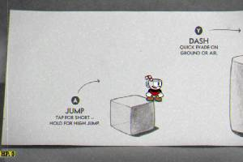
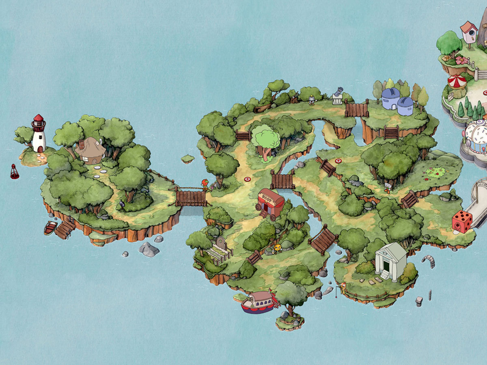
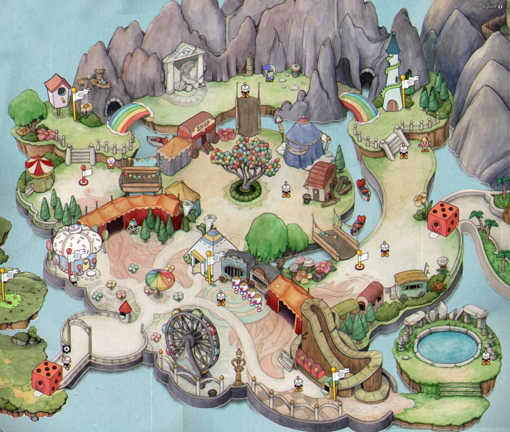
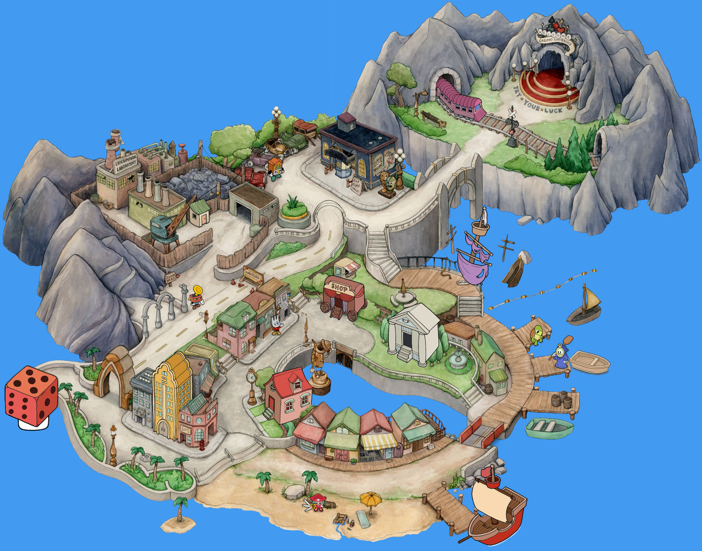
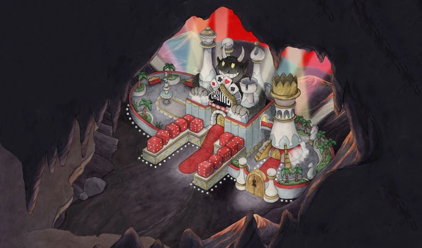

O Cuphead é um jogo dividido em fases e ilhas, cada uma com seu nível de dificuldade, chefes e outros detalhes

A área onde você se acostuma com a jogabilidade e os controles do jogo: Tutorial

A Ilha 1 é a ilha inicial do jogo, onde você começa a sua jornada contra os bosses após o tutorial, você pode ver em detalhes acessando: Ilha 1

A Ilha 2 tem um nível de dificuldade acima da primeira, como vai ser de costume daqui pra frente. Ilha 2

A Ilha 3 posssui bosses muito diferenciados, além do considerado boss mais difícil do jogo! Ilha 3
